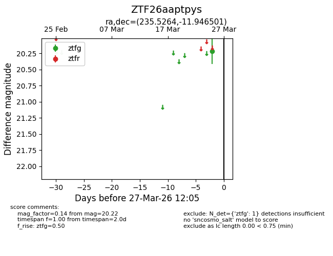
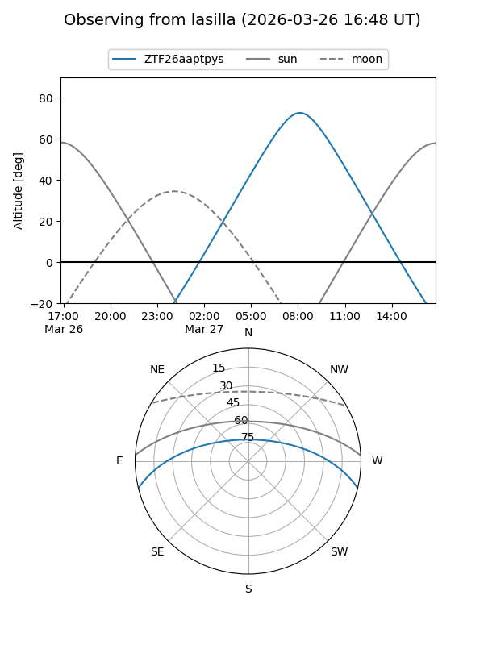
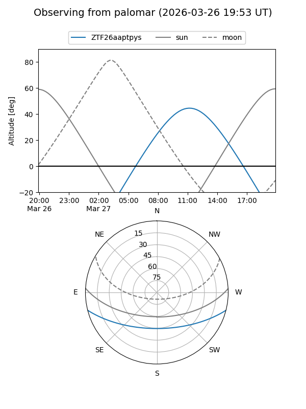

ZTF26aaptpys
Target ZTF26aaptpys at 2026-03-27 12:10
Aliases and brokers:
FINK: link
Lasair: link
ALeRCE: link
alt names
ZTF26aaptpys (ztf,fink_ztf)
Coordinates:
equatorial (ra, dec) = 235.5264,-11.94650
equatorial (HMS+DMS) = 15:42:06.34,-11:56:47.40
galactic (l, b) = (355.2437,+33.08288)
Flags:
Photometry:
last ztfg=20.22
1 ztfg detections
Lightcurve

Visibility


Additional plots